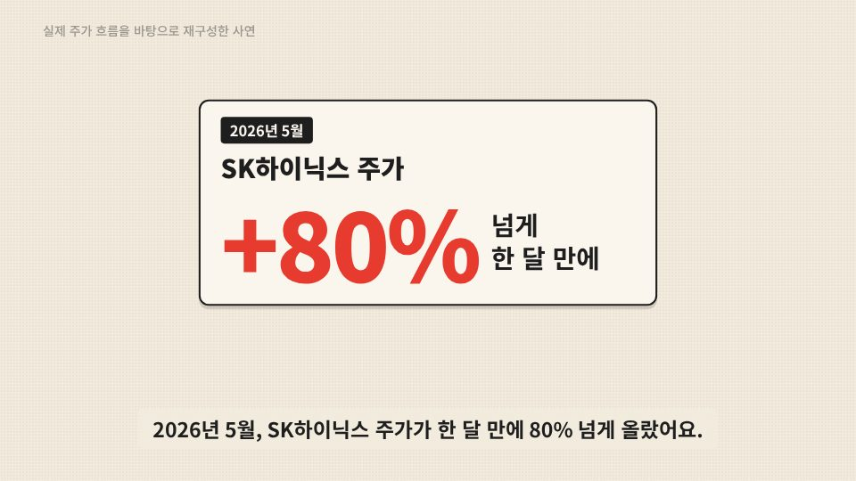
- 1 2026년 5월, SK하이닉스 주가가 한 달 만에 80% 넘게 올랐어요.
연출 1: 뉴스 카드(2026년 5월 · SK하이닉스 주가) → +80% 카운트업(빨강) + '넘게 · 한 달 만에'
연결 근거 문장 1 '2026년 5월, SK하이닉스 주가가 한 달 만에 80% 넘게 올랐어요' → 날짜 칩·+80%(상승 = 빨강)
scene_plan.md · 투자 교육용 영상이며 특정 종목의 매수·매도 권유가 아닙니다.
연출 1: 뉴스 카드(2026년 5월 · SK하이닉스 주가) → +80% 카운트업(빨강) + '넘게 · 한 달 만에'
연결 근거 문장 1 '2026년 5월, SK하이닉스 주가가 한 달 만에 80% 넘게 올랐어요' → 날짜 칩·+80%(상승 = 빨강)
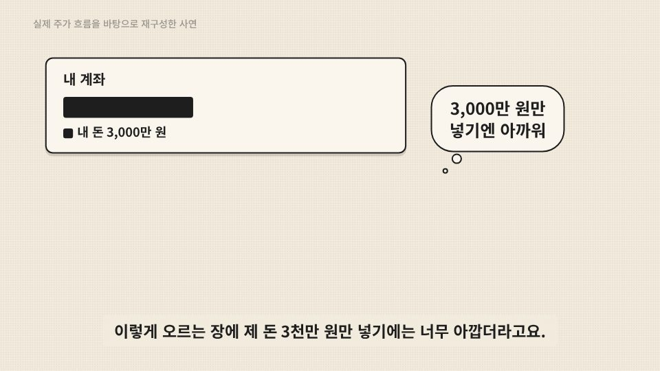
연출 2: 계좌 카드(간단형) 등장, 막대에 내 돈 3,000만 원(잉크 칸)이 차오름 + 생각 말풍선 '3,000만 원만 넣기엔 아까워' / 3: 말풍선 퇴장, 빌린 돈 3,000만 원(빗금 칸)이 붙고 머리글 '주식 6,000만 원어치', 산 뒤 평가손익 줄이 열리며 0원 / 4: 오른쪽 '신용 거래' 칩 → '산 주식 = 담보' → '증권사 돈을 빌림'
연결 근거 문장 2 '제 돈 3천만 원만 넣기에는 너무 아깝더라고요' → 내 돈 칸·말풍선 / 문장 3 '3천만 원을 빌려 6천만 원어치를 샀죠' → 빌린 돈 칸·6,000만 원어치 / 문장 4 '산 주식을 담보로 증권사 돈을 빌리는 신용 거래' → 신용 거래 설명
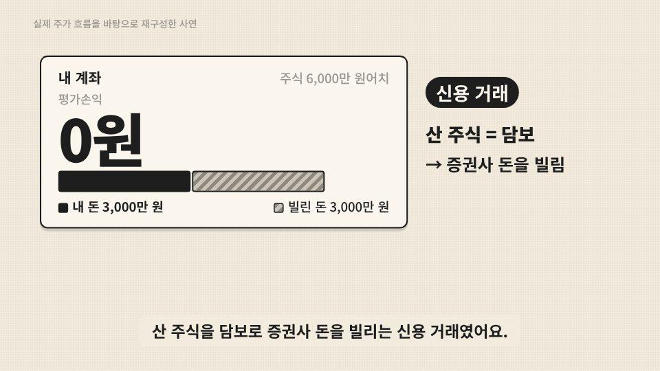
연출 2: 계좌 카드(간단형) 등장, 막대에 내 돈 3,000만 원(잉크 칸)이 차오름 + 생각 말풍선 '3,000만 원만 넣기엔 아까워' / 3: 말풍선 퇴장, 빌린 돈 3,000만 원(빗금 칸)이 붙고 머리글 '주식 6,000만 원어치', 산 뒤 평가손익 줄이 열리며 0원 / 4: 오른쪽 '신용 거래' 칩 → '산 주식 = 담보' → '증권사 돈을 빌림'
연결 근거 문장 2 '제 돈 3천만 원만 넣기에는 너무 아깝더라고요' → 내 돈 칸·말풍선 / 문장 3 '3천만 원을 빌려 6천만 원어치를 샀죠' → 빌린 돈 칸·6,000만 원어치 / 문장 4 '산 주식을 담보로 증권사 돈을 빌리는 신용 거래' → 신용 거래 설명
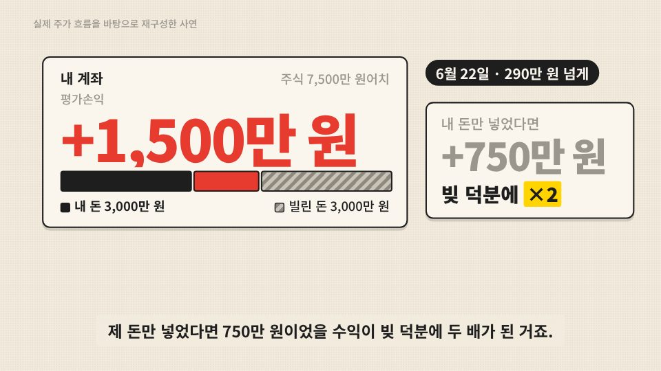
연출 5: '6월 22일 · 290만 원 넘게' 칩, S02 카드 평가손익 0 → +1,500만 원(빨강), 막대에 수익 칸(빨강)이 붙어 7,500만 원어치 / 6: 오른쪽 카드 '내 돈만 넣었다면 +750만 원'(회색) → '빚 덕분에 ×2'(형광펜) / 7: 비교 카드 퇴장, '수익 ×2'(빨강 칩) → '손실도 ×2'(파랑 칩)
연결 근거 문장 5 '6월 22일 주가가 290만 원을 넘으면서 수익이 1,500만 원' / 문장 6 '제 돈만 넣었다면 750만 원이었을 수익이 빚 덕분에 두 배' / 문장 7 '빚은 수익만 두 배로 키우는 게 아니었습니다' → 손실도 ×2 (문장 28에서 다시 설명)
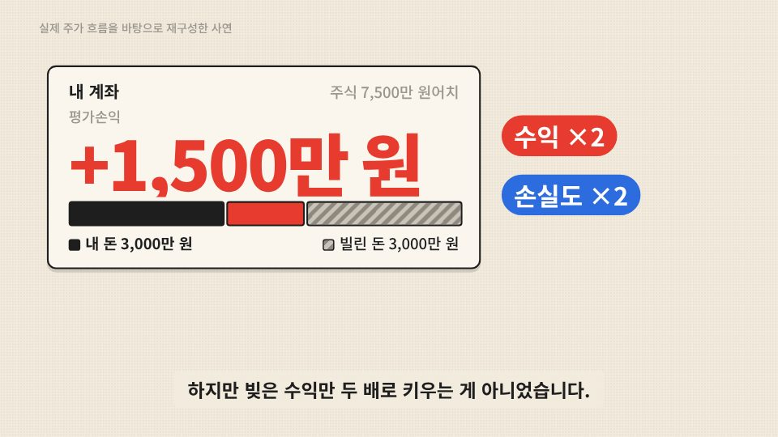
연출 5: '6월 22일 · 290만 원 넘게' 칩, S02 카드 평가손익 0 → +1,500만 원(빨강), 막대에 수익 칸(빨강)이 붙어 7,500만 원어치 / 6: 오른쪽 카드 '내 돈만 넣었다면 +750만 원'(회색) → '빚 덕분에 ×2'(형광펜) / 7: 비교 카드 퇴장, '수익 ×2'(빨강 칩) → '손실도 ×2'(파랑 칩)
연결 근거 문장 5 '6월 22일 주가가 290만 원을 넘으면서 수익이 1,500만 원' / 문장 6 '제 돈만 넣었다면 750만 원이었을 수익이 빚 덕분에 두 배' / 문장 7 '빚은 수익만 두 배로 키우는 게 아니었습니다' → 손실도 ×2 (문장 28에서 다시 설명)
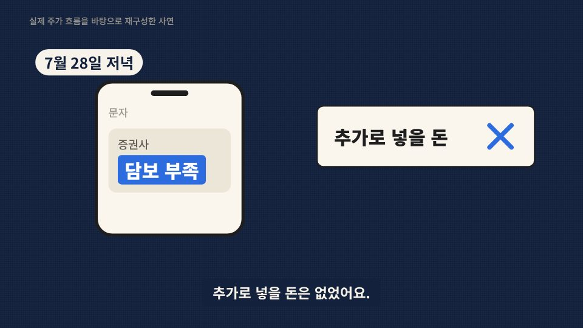
연출 8: 찢어진 종이 전환(네이비), '7월 28일 저녁' 칩, 휴대폰 화면에 증권사 문자 '담보 부족'(파랑 박스) / 9: 오른쪽 카드 '추가로 넣을 돈' + ✗
연결 근거 문장 8 '7월 28일 저녁, 증권사에서 담보가 부족하다는 문자' → 날짜 칩·문자 / 문장 9 '추가로 넣을 돈은 없었어요' → ✗
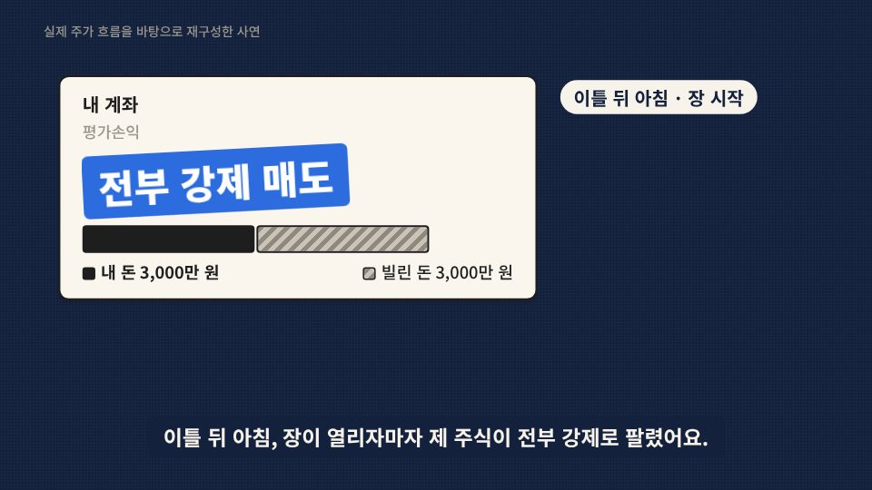
연출 10: '이틀 뒤 아침 · 장 시작' 칩, S02 카드(내 돈 3,000만 + 빌린 돈 3,000만)의 평가손익 자리에 '전부 강제 매도' 도장(파랑 박스) / 11: 빌린 돈 칸이 사라짐('빌린 돈 갚음'), 내 돈 칸이 3,000만 → 500만 원으로 줄고 잃은 2,500만 원은 파랑 점선, 평가손익 -2,500만 원 카운트 + 흔들림
연결 근거 문장 10 '이틀 뒤 아침, 장이 열리자마자 제 주식이 전부 강제로 팔렸어요' → 도장 / 문장 11 '빚을 갚고 남은 돈은 500만 원, -2,500만 원' → 빌린 돈 칸 사라짐·500만 원·-2,500만 원
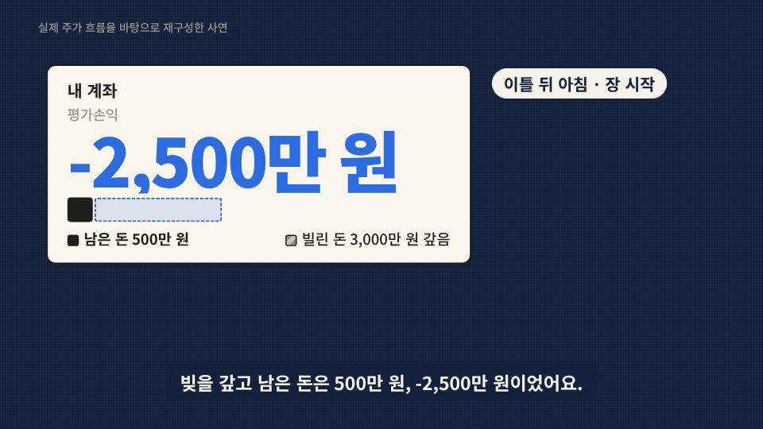
연출 10: '이틀 뒤 아침 · 장 시작' 칩, S02 카드(내 돈 3,000만 + 빌린 돈 3,000만)의 평가손익 자리에 '전부 강제 매도' 도장(파랑 박스) / 11: 빌린 돈 칸이 사라짐('빌린 돈 갚음'), 내 돈 칸이 3,000만 → 500만 원으로 줄고 잃은 2,500만 원은 파랑 점선, 평가손익 -2,500만 원 카운트 + 흔들림
연결 근거 문장 10 '이틀 뒤 아침, 장이 열리자마자 제 주식이 전부 강제로 팔렸어요' → 도장 / 문장 11 '빚을 갚고 남은 돈은 500만 원, -2,500만 원' → 빌린 돈 칸 사라짐·500만 원·-2,500만 원
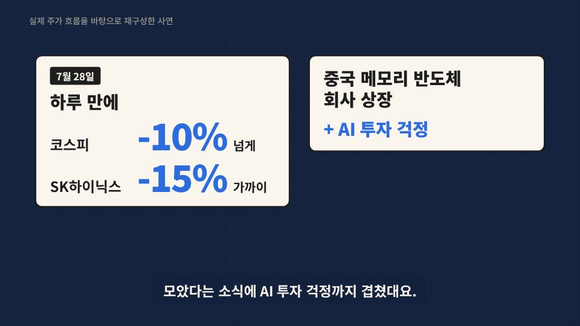
연출 12: 뉴스 카드 '7월 28일 · 하루 만에' + 코스피 -10% 넘게 / (뒷줄) SK하이닉스 -15% 가까이 / 13: 오른쪽 카드 '중국 메모리 반도체 회사 상장' / (뒷줄) '+ AI 투자 걱정'
연결 근거 문장 12 '7월 28일 하루에만 코스피가 10% 넘게, (뒷줄) SK하이닉스는 15% 가까이' / 문장 13 '중국의 메모리 반도체 회사가 상장해 … (뒷줄) AI 투자 걱정까지'
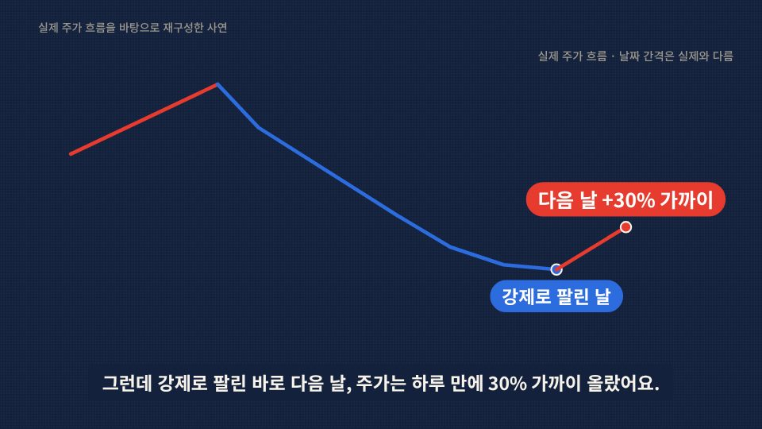
연출 14: 실제 주가 선(산 날 → 6월 22일 → 7월 28일 → 7월 30일 시가)이 그려지고 끝점에 '강제로 팔린 날'(파랑 칩) → 다음 날 빨강 선이 위로, '다음 날 +30% 가까이'(빨강 칩)
연결 근거 문장 14 '강제로 팔린 바로 다음 날, 주가는 하루 만에 30% 가까이 올랐어요'. 선의 꺾임은 README 실제 시세(facts.pricePath), 숫자는 표시하지 않음
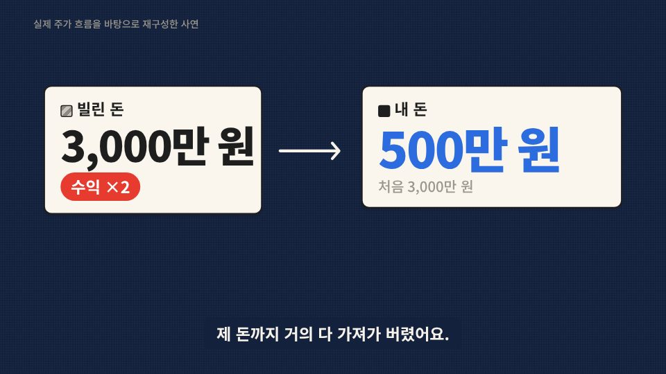
연출 15: 빗금 블록 '빌린 돈 3,000만 원' + '수익 ×2'(빨강) / (뒷줄) 화살표 → '내 돈 3,000만 원 → 500만 원'(파랑 카운트) / 16: 모두 퇴장, '빚만 없었다면' + 날짜 칸 '7월 30일 강제 매도' · '7월 31일 +30% 가까이' + 그 사이 '그 하루'(형광펜)
연결 근거 문장 15 '수익을 두 배로 만들어 준 3천만 원의 빚이 / (뒷줄) 제 돈까지 거의 다 가져가 버렸어요' → 3,000만 → 500만 원 / 문장 16 '빚만 없었어도 그 하루를 버틸 수 있었을 텐데요' → 팔린 날과 반등한 날 사이 하루 (7월 30일 = 7월 28일 + 이틀, 7월 31일 = 다음 날)
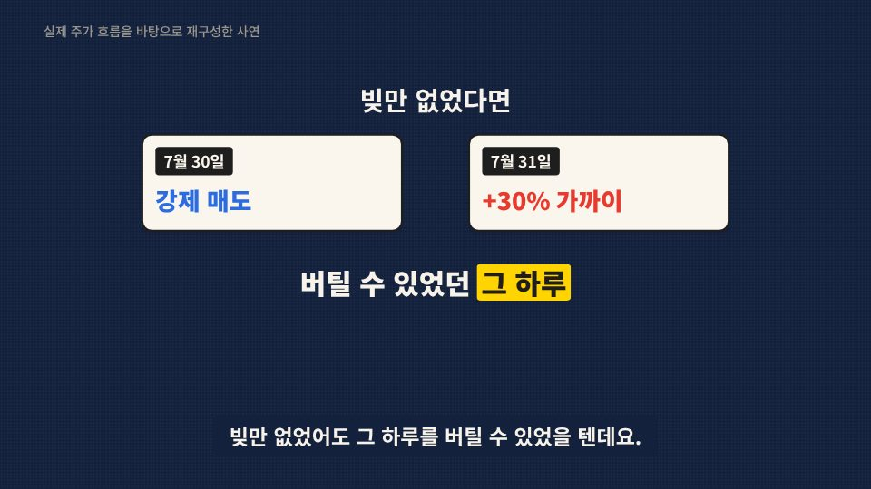
연출 15: 빗금 블록 '빌린 돈 3,000만 원' + '수익 ×2'(빨강) / (뒷줄) 화살표 → '내 돈 3,000만 원 → 500만 원'(파랑 카운트) / 16: 모두 퇴장, '빚만 없었다면' + 날짜 칸 '7월 30일 강제 매도' · '7월 31일 +30% 가까이' + 그 사이 '그 하루'(형광펜)
연결 근거 문장 15 '수익을 두 배로 만들어 준 3천만 원의 빚이 / (뒷줄) 제 돈까지 거의 다 가져가 버렸어요' → 3,000만 → 500만 원 / 문장 16 '빚만 없었어도 그 하루를 버틸 수 있었을 텐데요' → 팔린 날과 반등한 날 사이 하루 (7월 30일 = 7월 28일 + 이틀, 7월 31일 = 다음 날)
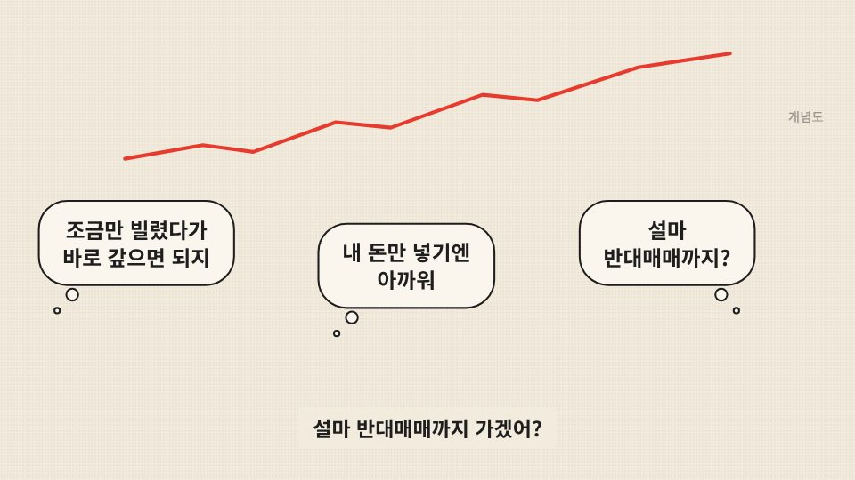
연출 17: 크림으로 찢어진 종이 전환, 쭉쭉 오르는 빨강 선(개념도) / 18·19·20: 생각 말풍선이 자막마다 하나씩
연결 근거 문장 17 '주가가 쭉쭉 오를 때 … 이런 생각' → 오르는 선 / 18 '조금만 빌렸다가 오르면 바로 갚으면 되지' / 19 '내 돈만 넣기엔 이 상승장이 아까워' / 20 '설마 반대매매까지 가겠어?'
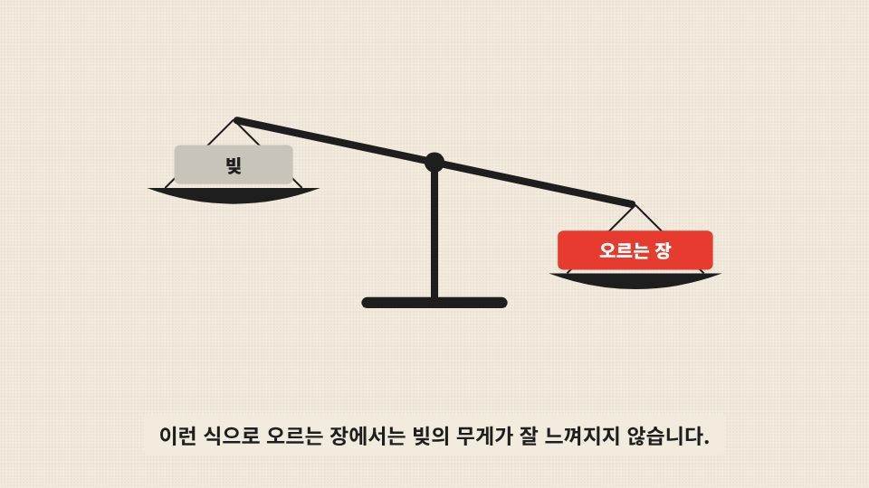
연출 21: 천칭 저울 — '오르는 장'(빨강)이 무겁고 '빚'(빗금)이 가볍게 위로 / 22: 저울 퇴장, '6월 24일 · 신용융자 잔고' 칩 → 38조 6천억 원 → '사상 최대'(형광펜) / 23: '= 개인 투자자가 증권사 돈을 빌려 산 주식'
연결 근거 문장 21 '오르는 장에서는 빚의 무게가 잘 느껴지지 않습니다' → 저울 / 22 '6월 24일, 신용융자 잔고는 38조 6천억 원으로 사상 최대' / 23 '개인 투자자가 증권사 돈을 빌려 산 주식이 그만큼 많았던'
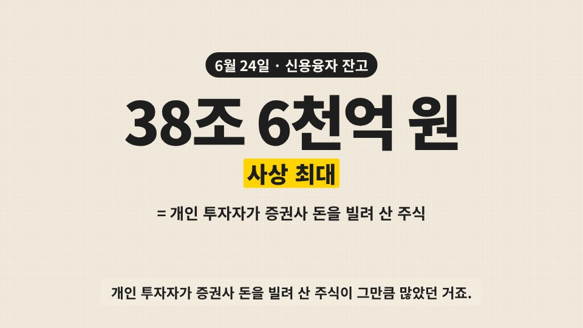
연출 21: 천칭 저울 — '오르는 장'(빨강)이 무겁고 '빚'(빗금)이 가볍게 위로 / 22: 저울 퇴장, '6월 24일 · 신용융자 잔고' 칩 → 38조 6천억 원 → '사상 최대'(형광펜) / 23: '= 개인 투자자가 증권사 돈을 빌려 산 주식'
연결 근거 문장 21 '오르는 장에서는 빚의 무게가 잘 느껴지지 않습니다' → 저울 / 22 '6월 24일, 신용융자 잔고는 38조 6천억 원으로 사상 최대' / 23 '개인 투자자가 증권사 돈을 빌려 산 주식이 그만큼 많았던'
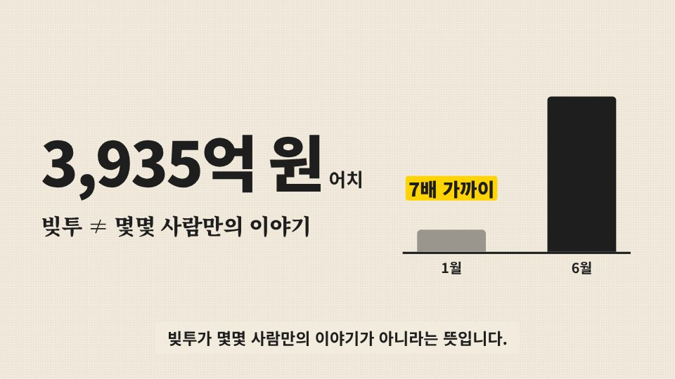
연출 24: 왼쪽 '6월 한 달 · 증권사 10곳 / 신용 반대매매로 팔린 주식' / (뒷줄) 3,935억 원어치 카운트 + 오른쪽 6월 막대 / 25: 1월 막대(6월의 1/7) + '7배 가까이'(형광펜) / 26: 왼쪽 설명 퇴장, '빚투 ≠ 몇몇 사람만의 이야기'
연결 근거 문장 24 '6월 한 달 증권사 10곳에서 신용 반대매매로 / (뒷줄) 팔린 주식은 3,935억 원어치' / 25 '1월보다 7배 가까이' (1월 막대 = 3,935 ÷ 7, 숫자 표시 안 함) / 26 '빚투가 몇몇 사람만의 이야기가 아니라는 뜻'
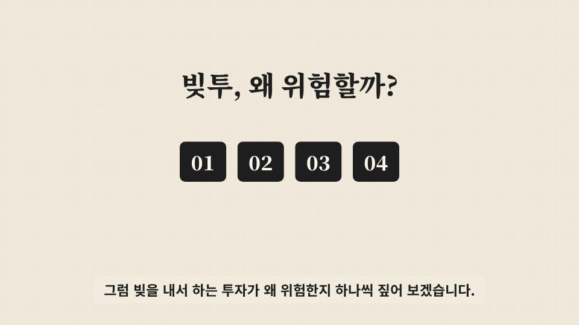
연출 27: '빚투, 왜 위험할까?' → 번호 01~04가 차례로
연결 근거 문장 27 '빚을 내서 하는 투자가 왜 위험한지 하나씩 짚어 보겠습니다' → 문제 4개 번호
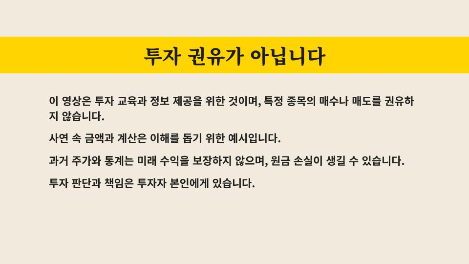
투자 권유가 아닙니다 — 이 영상은 투자 교육과 정보 제공을 위한 것이며, 특정 종목의 매수나 매도를 권유하지 않습니다. / 사연 속 금액과 계산은 이해를 돕기 위한 예시입니다. / 과거 주가와 통계는 미래 수익을 보장하지 않으며, 원금 손실이 생길 수 있습니다. / 투자 판단과 책임은 투자자 본인에게 있습니다.
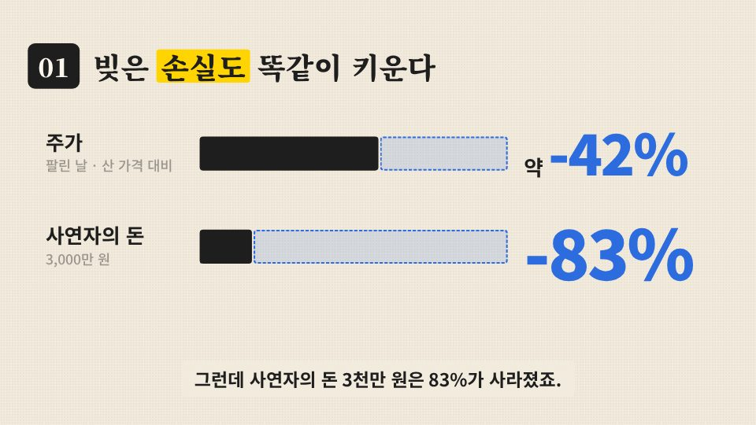
연출 28: 번호 타이틀 01 ('손실도' 형광펜) / 29: 첫 줄 '주가 · 팔린 날, 산 가격 대비' 막대가 100% → 58%로 줄고(잃은 부분 파랑 점선) 약 -42% 카운트 / 30: 둘째 줄 '사연자의 돈 3,000만 원' 막대가 100% → 17%로, -83% 카운트
연결 근거 문장 28 '빚이 수익뿐 아니라 손실도 똑같이 키운다' / 29 '주식이 팔린 날, 주가는 산 가격보다 42% 가까이 낮았습니다' / 30 '사연자의 돈 3천만 원은 83%가 사라졌죠'
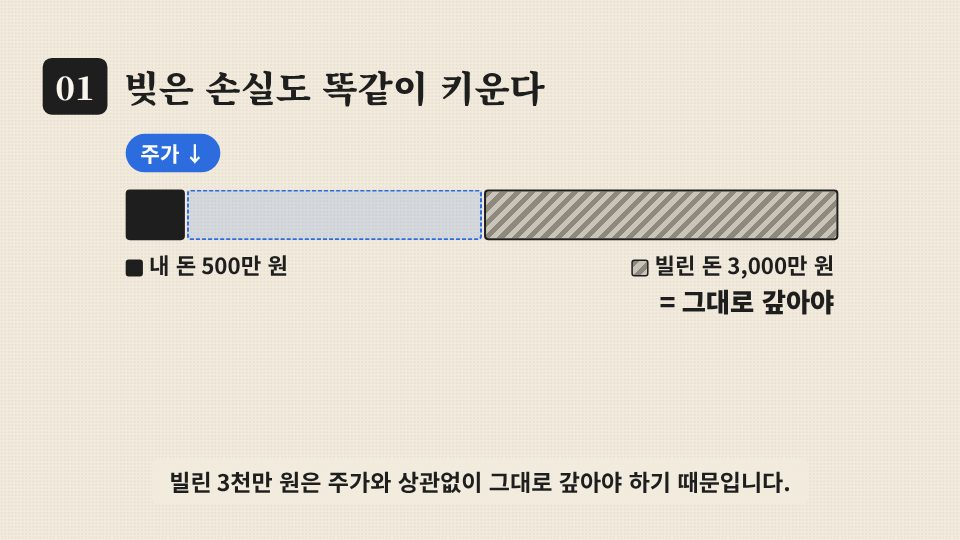
연출 31: S02 카드와 같은 평가액 막대(크게) — 주가가 내려가며 내 돈 칸만 3,000만 → 500만 원으로 줄고 빌린 돈 칸은 그대로, '빌린 돈 3,000만 원 = 그대로 갚아야' / 32: 막대가 내 돈 = 빌린 돈(같은 길이)으로 돌아가고 칩 '내 돈과 같은 금액을 빌렸다면' / (뒷줄) '주가 -50%' 칩 → 내 돈 칸이 모두 파랑 점선, '내 돈 0원'
연결 근거 문장 31 '빌린 3천만 원은 주가와 상관없이 그대로 갚아야' → 빌린 돈 칸 고정 / 문장 32 '내 돈과 같은 금액을 빌렸다면, / (뒷줄) 주가가 절반만 떨어져도 내 돈은 하나도 남지 않습니다' → 6,000 × 50% = 3,000 = 빌린 돈 → 0원 (facts.halfLeft)
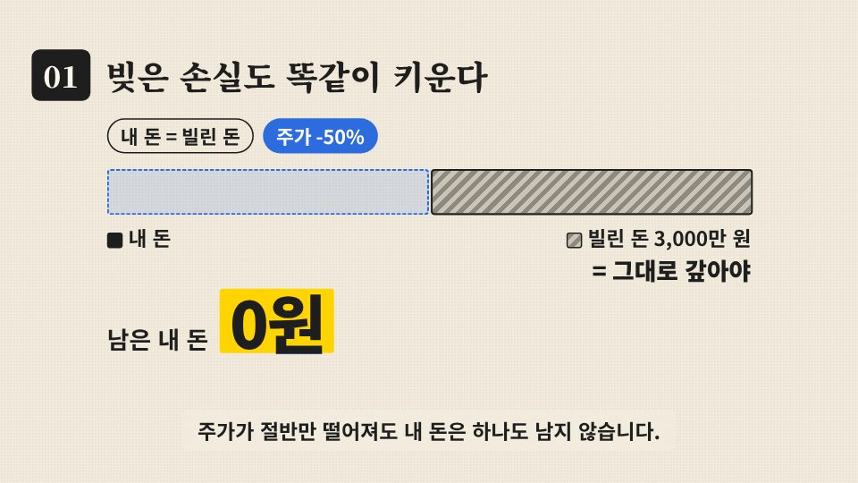
연출 31: S02 카드와 같은 평가액 막대(크게) — 주가가 내려가며 내 돈 칸만 3,000만 → 500만 원으로 줄고 빌린 돈 칸은 그대로, '빌린 돈 3,000만 원 = 그대로 갚아야' / 32: 막대가 내 돈 = 빌린 돈(같은 길이)으로 돌아가고 칩 '내 돈과 같은 금액을 빌렸다면' / (뒷줄) '주가 -50%' 칩 → 내 돈 칸이 모두 파랑 점선, '내 돈 0원'
연결 근거 문장 31 '빌린 3천만 원은 주가와 상관없이 그대로 갚아야' → 빌린 돈 칸 고정 / 문장 32 '내 돈과 같은 금액을 빌렸다면, / (뒷줄) 주가가 절반만 떨어져도 내 돈은 하나도 남지 않습니다' → 6,000 × 50% = 3,000 = 빌린 돈 → 0원 (facts.halfLeft)
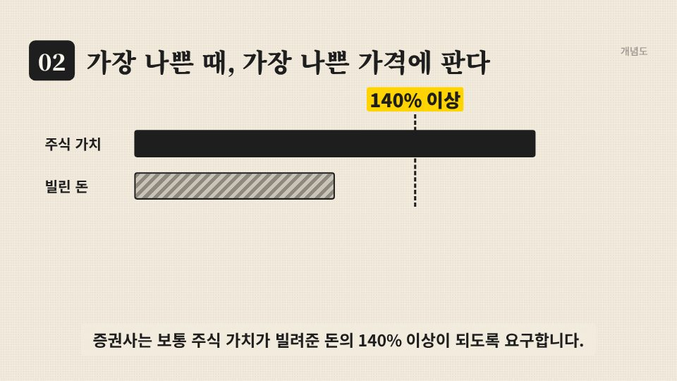
연출 33: 번호 타이틀 02 / 34: 담보 비율 막대 — 주식 가치(잉크)와 빌린 돈(빗금), 140% 점선 + '140%'(형광펜) / 35: 주식 가치 막대가 140% 선 아래로 줄며 파랑, 칩 '정해진 날까지 돈 더 넣기' / 36: 칩 '못 넣으면 → 장 시작하자마자 매도'(파랑)
연결 근거 문장 33 '가장 나쁜 때에 가장 나쁜 가격으로' / 34 '주식 가치가 빌려준 돈의 140% 이상' / 35 '이 선 아래로 떨어지면 정해진 날까지 돈을 더 넣으라고' / 36 '넣지 못하면 장이 열리자마자 주식을 팔아'
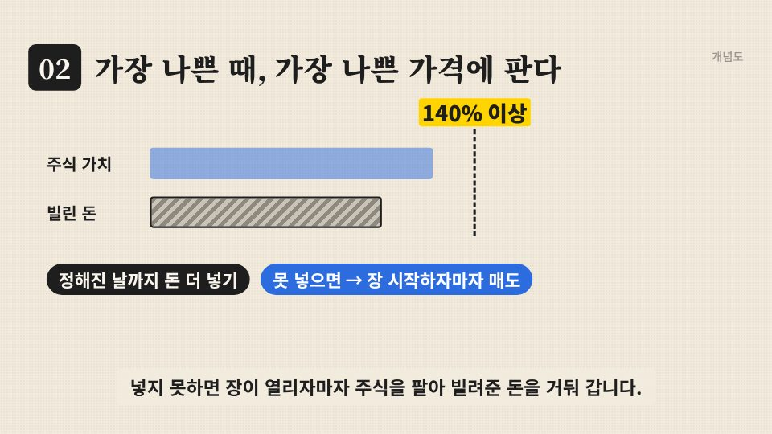
연출 33: 번호 타이틀 02 / 34: 담보 비율 막대 — 주식 가치(잉크)와 빌린 돈(빗금), 140% 점선 + '140%'(형광펜) / 35: 주식 가치 막대가 140% 선 아래로 줄며 파랑, 칩 '정해진 날까지 돈 더 넣기' / 36: 칩 '못 넣으면 → 장 시작하자마자 매도'(파랑)
연결 근거 문장 33 '가장 나쁜 때에 가장 나쁜 가격으로' / 34 '주식 가치가 빌려준 돈의 140% 이상' / 35 '이 선 아래로 떨어지면 정해진 날까지 돈을 더 넣으라고' / 36 '넣지 못하면 장이 열리자마자 주식을 팔아'
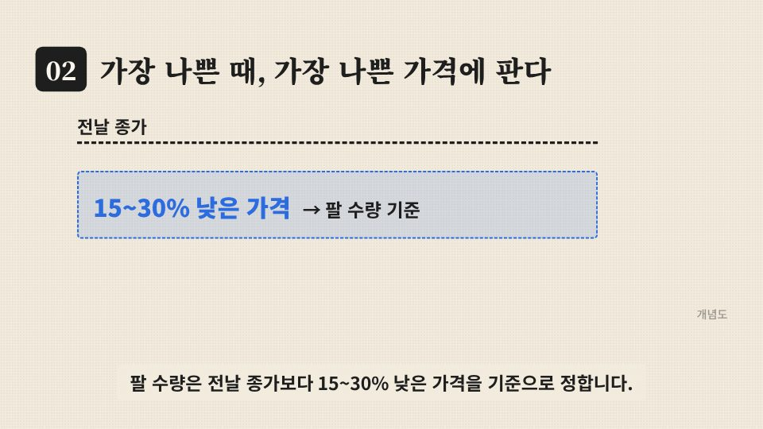
연출 37: '전날 종가' 선 + 그 아래 파랑 띠 '15~30% 낮은 가격 → 팔 수량 기준'(개념도) / 38: 띠 퇴장, 막대 '모자란 돈'(작게, 회색) vs '팔리는 주식'(크게, 파랑) / 39: '금융감독원 사례' 칩, 왼쪽 막대에 '201만 원' / 40: 오른쪽 막대에 '405주 · 3,090만 원어치' + '전부 팔림'(형광펜)
연결 근거 문장 37 '팔 수량은 전날 종가보다 15~30% 낮은 가격을 기준으로' / 38 '모자란 돈보다 훨씬 많은 주식이 팔릴 수' / 39 '금융감독원이 소개한 사례 … 모자란 담보가 201만 원' / 40 '주식 405주, 3,090만 원어치가 전부 팔렸죠' (막대 비율 201 : 3,090)
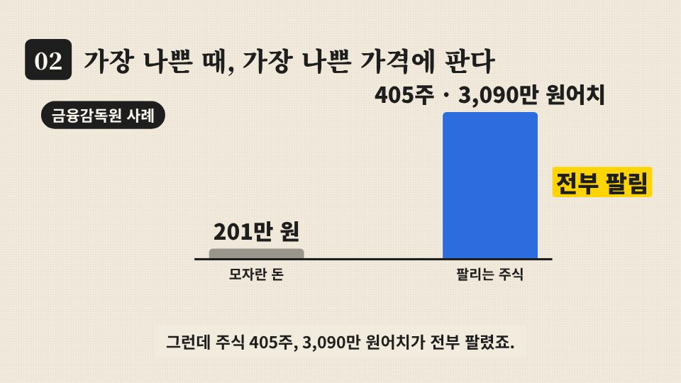
연출 37: '전날 종가' 선 + 그 아래 파랑 띠 '15~30% 낮은 가격 → 팔 수량 기준'(개념도) / 38: 띠 퇴장, 막대 '모자란 돈'(작게, 회색) vs '팔리는 주식'(크게, 파랑) / 39: '금융감독원 사례' 칩, 왼쪽 막대에 '201만 원' / 40: 오른쪽 막대에 '405주 · 3,090만 원어치' + '전부 팔림'(형광펜)
연결 근거 문장 37 '팔 수량은 전날 종가보다 15~30% 낮은 가격을 기준으로' / 38 '모자란 돈보다 훨씬 많은 주식이 팔릴 수' / 39 '금융감독원이 소개한 사례 … 모자란 담보가 201만 원' / 40 '주식 405주, 3,090만 원어치가 전부 팔렸죠' (막대 비율 201 : 3,090)
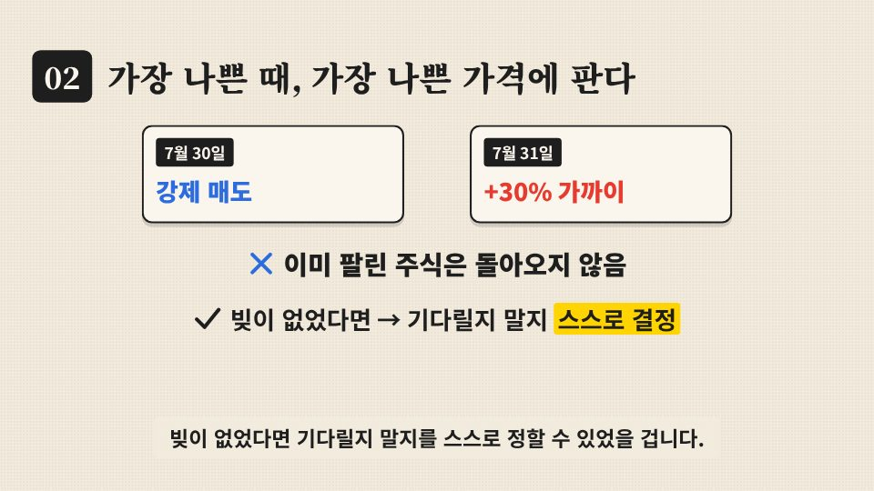
연출 41: S08과 같은 날짜 칸 '7월 30일 강제 매도' → '7월 31일 +30% 가까이' / (뒷줄) ✗ '이미 팔린 주식은 돌아오지 않음' / 42: '빚이 없었다면' ✓ '기다릴지 말지 = 스스로 결정'
연결 근거 문장 41 '사연자처럼 다음 날 주가가 30% 가까이 올라도, / (뒷줄) 이미 팔린 주식은 돌아오지 않습니다' / 42 '빚이 없었다면 기다릴지 말지를 스스로 정할 수'
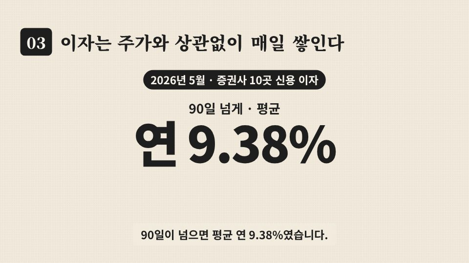
연출 43: 번호 타이틀 03 + 개념도: 오르내리는 회색 '주가' 선과 상관없이 매일 한 칸씩 오르는 파랑 '이자' 계단 / 44: 개념도 퇴장, '2026년 5월 · 증권사 10곳 신용 이자' 칩 / (뒷줄) '90일 넘게 · 평균' + 연 9.38% / 45: 칩·9.38% 퇴장, '3,000만 원 · 1년 · 연 9.38%' → 이자 280만 원 넘게(파랑 카운트) / 46: '빌린 돈으로 산 부분' → '1년에 +9% 넘게 못 오르면 손해'(형광펜)
연결 근거 문장 43 '이자가 주가와 상관없이 매일 쌓인다' → 계단(개념도) / 44 '2026년 5월 증권사 10곳의 신용 이자는 / (뒷줄) 90일이 넘으면 평균 연 9.38%' / 45 '3천만 원을 1년 빌리면 이자만 280만 원이 넘습니다' / 46 '1년에 9% 넘게 오르지 않으면 오히려 손해'
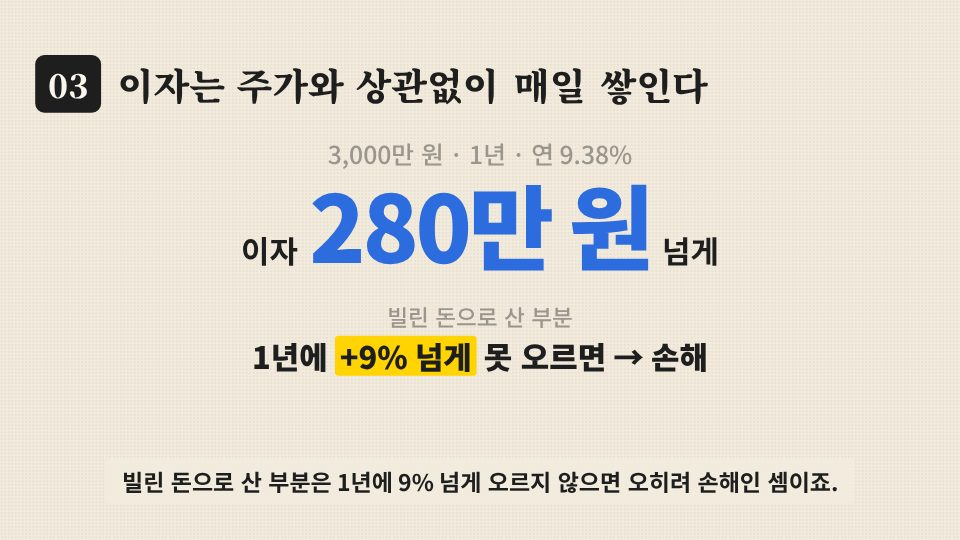
연출 43: 번호 타이틀 03 + 개념도: 오르내리는 회색 '주가' 선과 상관없이 매일 한 칸씩 오르는 파랑 '이자' 계단 / 44: 개념도 퇴장, '2026년 5월 · 증권사 10곳 신용 이자' 칩 / (뒷줄) '90일 넘게 · 평균' + 연 9.38% / 45: 칩·9.38% 퇴장, '3,000만 원 · 1년 · 연 9.38%' → 이자 280만 원 넘게(파랑 카운트) / 46: '빌린 돈으로 산 부분' → '1년에 +9% 넘게 못 오르면 손해'(형광펜)
연결 근거 문장 43 '이자가 주가와 상관없이 매일 쌓인다' → 계단(개념도) / 44 '2026년 5월 증권사 10곳의 신용 이자는 / (뒷줄) 90일이 넘으면 평균 연 9.38%' / 45 '3천만 원을 1년 빌리면 이자만 280만 원이 넘습니다' / 46 '1년에 9% 넘게 오르지 않으면 오히려 손해'
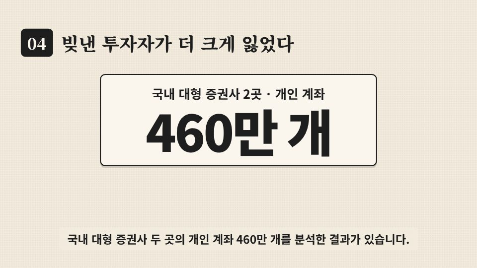
연출 47: 번호 타이틀 04 / 48: 카드 '국내 대형 증권사 2곳 · 개인 계좌' + 460만 개 / 49: 카드 퇴장, '2026년 3월 1~9일 폭락장' 칩 / (뒷줄) 왼쪽 막대 '신용 쓴 계좌' -19% / 50: 오른쪽 막대 '신용 안 쓴 계좌' -8.2%(연한 파랑) + '2.3배'(형광펜)
연결 근거 문장 47 '빚을 낸 투자자가 하락장에서 훨씬 크게 잃었다' / 48 '대형 증권사 두 곳의 개인 계좌 460만 개' / 49 '2026년 3월 1일부터 9일까지 폭락장에서 / (뒷줄) 신용을 쓴 계좌는 평균 19%' / 50 '쓰지 않은 계좌의 손실 8.2%보다 2.3배' (대본에 기관 이름이 없어 출처 캡션 없음)
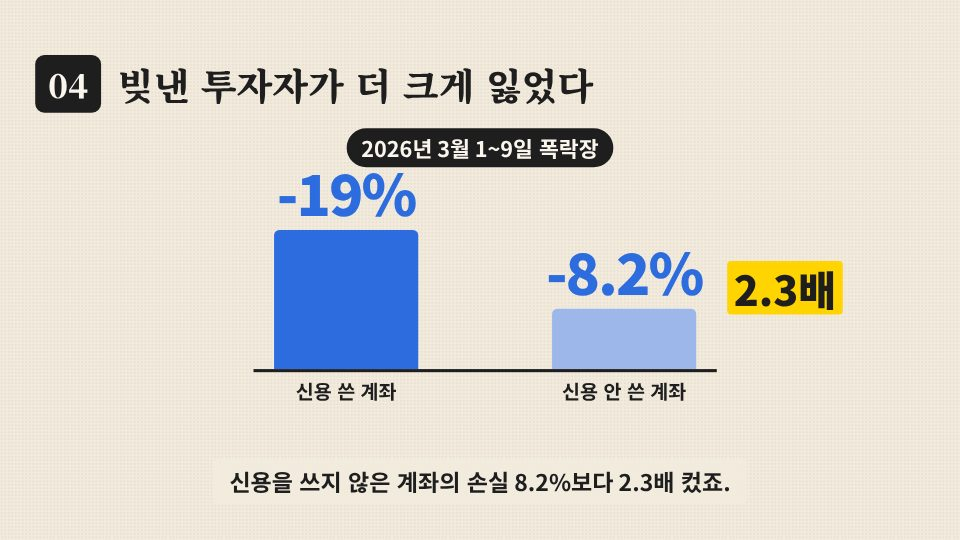
연출 47: 번호 타이틀 04 / 48: 카드 '국내 대형 증권사 2곳 · 개인 계좌' + 460만 개 / 49: 카드 퇴장, '2026년 3월 1~9일 폭락장' 칩 / (뒷줄) 왼쪽 막대 '신용 쓴 계좌' -19% / 50: 오른쪽 막대 '신용 안 쓴 계좌' -8.2%(연한 파랑) + '2.3배'(형광펜)
연결 근거 문장 47 '빚을 낸 투자자가 하락장에서 훨씬 크게 잃었다' / 48 '대형 증권사 두 곳의 개인 계좌 460만 개' / 49 '2026년 3월 1일부터 9일까지 폭락장에서 / (뒷줄) 신용을 쓴 계좌는 평균 19%' / 50 '쓰지 않은 계좌의 손실 8.2%보다 2.3배' (대본에 기관 이름이 없어 출처 캡션 없음)
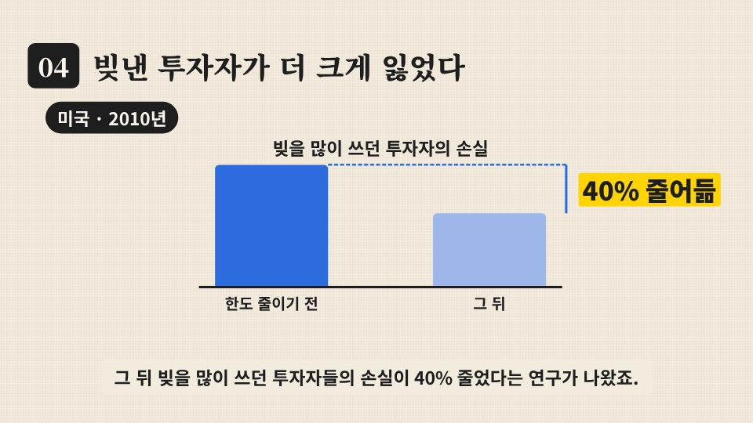
연출 51: '미국 · 2010년' 칩 / (뒷줄) '개인 외환 거래 · 쓸 수 있는 빚의 한도' 막대가 짧아짐(↓) / 52: 한도 막대 퇴장, 손실 막대 '한도 줄이기 전'(파랑) vs '그 뒤'(60% 길이) + '손실 -40%'(형광펜)
연결 근거 문장 51 '미국에서는 2010년 / (뒷줄) 개인 외환 거래에 쓸 수 있는 빚의 한도를 줄인' / 52 '빚을 많이 쓰던 투자자들의 손실이 40% 줄었다는 연구' (뒤 막대 = 100 - 40 = 60%, 연구자 이름은 대본에 없어 캡션 없음)
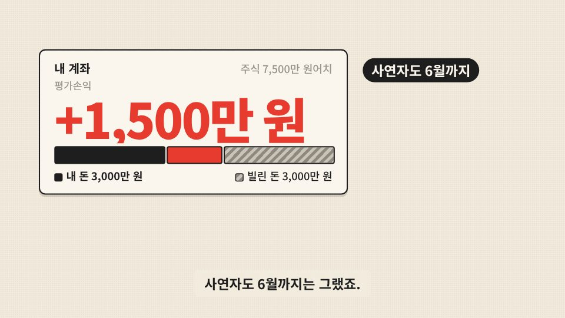
연출 53: 오른쪽 ✓ '빚 덕분에 크게 번 사람도' / 54: S03의 계좌 카드(6월 22일 상태: +1,500만 원, 수익 칸 빨강) + 칩 '사연자도 6월까지' / 55: 칩 '한 번의 폭락'(파랑), 평가손익 +1,500만 → 0원(수익 칸 사라짐) / (뒷줄) 0원 → -2,500만 원, 내 돈 칸 500만 원 + 흔들림 / 56: 모두 퇴장, '빚을 낸다면, 어떤 기준을 지킬까?'('어떤 기준' 형광펜)
연결 근거 문장 53 '빚 덕분에 크게 번 사람도 있습니다' / 54 '사연자도 6월까지는 그랬죠' → S03 카드 / 55 '한 번의 폭락이 그동안 번 돈에 / (뒷줄) 내 돈까지 한꺼번에' → +1,500 → 0 → -2,500 / 56 '어떤 기준을 지켜야 할까요?'
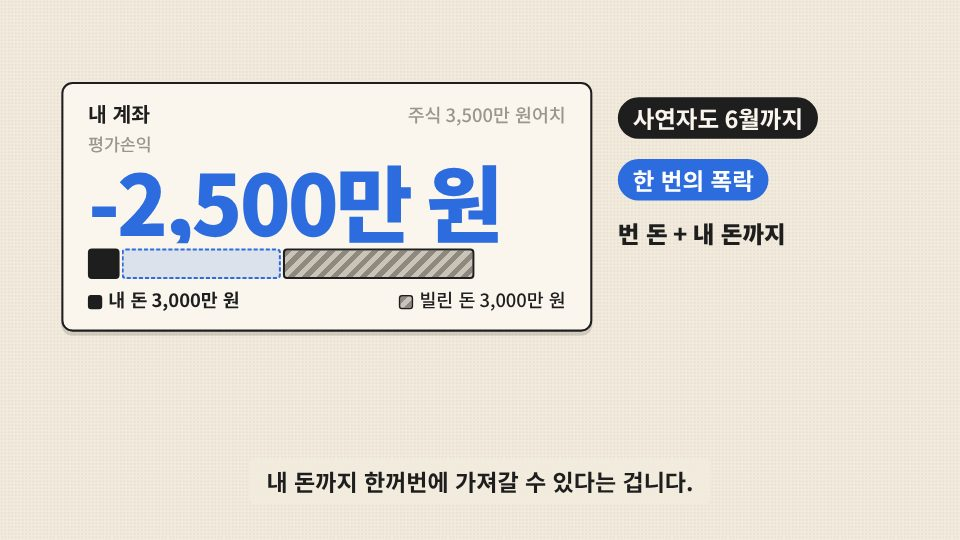
연출 53: 오른쪽 ✓ '빚 덕분에 크게 번 사람도' / 54: S03의 계좌 카드(6월 22일 상태: +1,500만 원, 수익 칸 빨강) + 칩 '사연자도 6월까지' / 55: 칩 '한 번의 폭락'(파랑), 평가손익 +1,500만 → 0원(수익 칸 사라짐) / (뒷줄) 0원 → -2,500만 원, 내 돈 칸 500만 원 + 흔들림 / 56: 모두 퇴장, '빚을 낸다면, 어떤 기준을 지킬까?'('어떤 기준' 형광펜)
연결 근거 문장 53 '빚 덕분에 크게 번 사람도 있습니다' / 54 '사연자도 6월까지는 그랬죠' → S03 카드 / 55 '한 번의 폭락이 그동안 번 돈에 / (뒷줄) 내 돈까지 한꺼번에' → +1,500 → 0 → -2,500 / 56 '어떤 기준을 지켜야 할까요?'
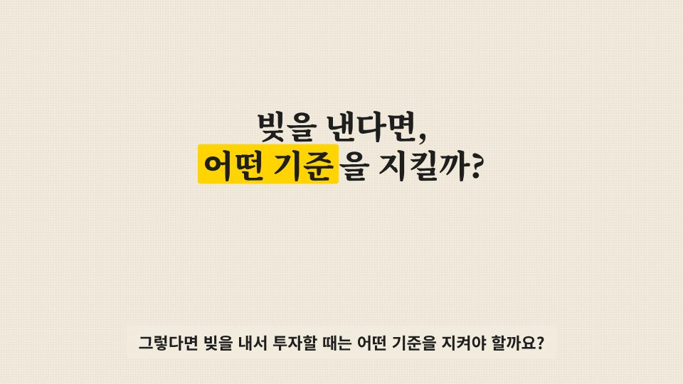
연출 53: 오른쪽 ✓ '빚 덕분에 크게 번 사람도' / 54: S03의 계좌 카드(6월 22일 상태: +1,500만 원, 수익 칸 빨강) + 칩 '사연자도 6월까지' / 55: 칩 '한 번의 폭락'(파랑), 평가손익 +1,500만 → 0원(수익 칸 사라짐) / (뒷줄) 0원 → -2,500만 원, 내 돈 칸 500만 원 + 흔들림 / 56: 모두 퇴장, '빚을 낸다면, 어떤 기준을 지킬까?'('어떤 기준' 형광펜)
연결 근거 문장 53 '빚 덕분에 크게 번 사람도 있습니다' / 54 '사연자도 6월까지는 그랬죠' → S03 카드 / 55 '한 번의 폭락이 그동안 번 돈에 / (뒷줄) 내 돈까지 한꺼번에' → +1,500 → 0 → -2,500 / 56 '어떤 기준을 지켜야 할까요?'
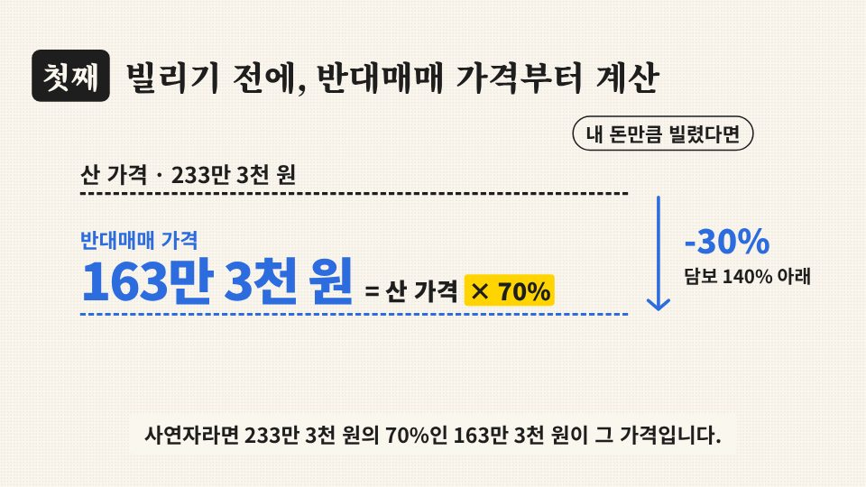
연출 57: 밝은 크림 전환, 번호 타이틀 '첫째', '산 가격' 선과 파랑 점선 '반대매매 가격 = ?' / 58: 칩 '내 돈만큼 빌렸다면' / (뒷줄) 화살표 '-30%' + '담보 140% 아래' / 59: '산 가격 233만 3천 원', '?'가 '163만 3천 원'으로 + '× 70%'(형광펜)
연결 근거 문장 57 '반대매매가 되는 가격부터 계산' / 58 '내 돈만큼 빌렸다면, / (뒷줄) 주가가 30%만 떨어져도 담보가 140% 아래로' / 59 '233만 3천 원의 70%인 163만 3천 원이 그 가격' (2 × 0.7 = 1.4)
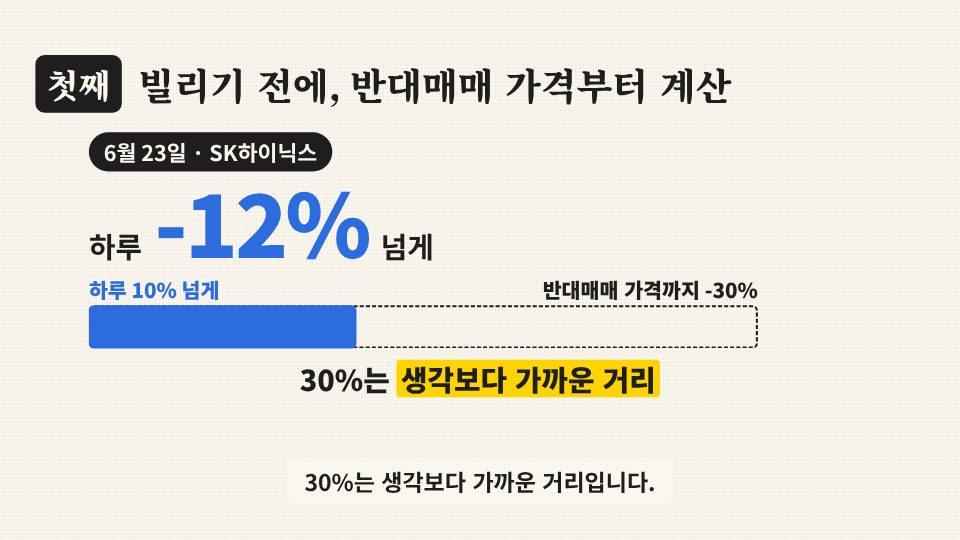
연출 60: '6월 23일 · SK하이닉스' 칩 + '하루 -12% 넘게'(파랑) / 61: 거리 막대에 '하루 10% 넘게' 파랑 칸 / (뒷줄) 막대 끝 '반대매매 가격까지 -30%' + '생각보다 가까운 거리'(형광펜)
연결 근거 문장 60 'SK하이닉스는 6월 23일 하루에만 12% 넘게' / 61 '하루에 10% 넘게 움직이는 종목이라면 / (뒷줄) 30%는 생각보다 가까운 거리' (막대 길이: 30% 중 12%)
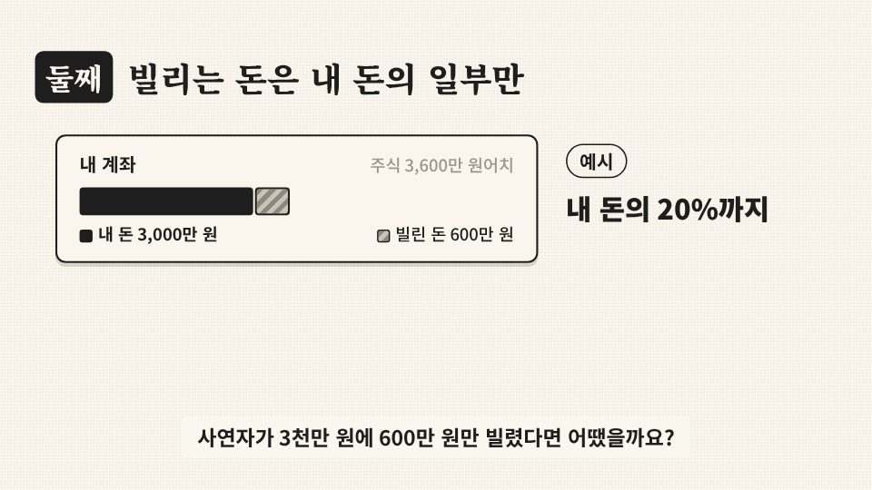
연출 62: 번호 타이틀 '둘째' / 63: '예시' 칩 + S02 계좌 카드(간단형)에 빌린 돈 칸이 내 돈의 20% 길이로, '내 돈의 20%까지' / 64: 카드 숫자 '내 돈 3,000만 원 · 빌린 돈 600만 원 · 주식 3,600만 원어치' / 65: 카드 퇴장, 거리 막대 두 줄 — '내 돈만큼 빌림 -30%'(회색, S22) vs '600만 원만 빌림 -77%'(형광펜)
연결 근거 문장 62 '빌리는 돈은 내 돈의 일부로만' / 63 '내 돈의 20%까지만' / 64 '3천만 원에 600만 원만 빌렸다면' (3,000 × 20% = 600) / 65 '주가가 77% 떨어져야 반대매매 가격에' (S22의 -30%와 같은 막대)
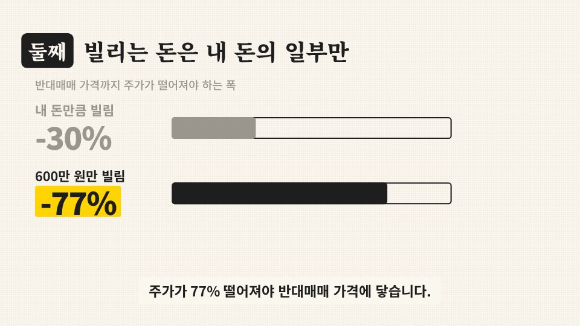
연출 62: 번호 타이틀 '둘째' / 63: '예시' 칩 + S02 계좌 카드(간단형)에 빌린 돈 칸이 내 돈의 20% 길이로, '내 돈의 20%까지' / 64: 카드 숫자 '내 돈 3,000만 원 · 빌린 돈 600만 원 · 주식 3,600만 원어치' / 65: 카드 퇴장, 거리 막대 두 줄 — '내 돈만큼 빌림 -30%'(회색, S22) vs '600만 원만 빌림 -77%'(형광펜)
연결 근거 문장 62 '빌리는 돈은 내 돈의 일부로만' / 63 '내 돈의 20%까지만' / 64 '3천만 원에 600만 원만 빌렸다면' (3,000 × 20% = 600) / 65 '주가가 77% 떨어져야 반대매매 가격에' (S22의 -30%와 같은 막대)
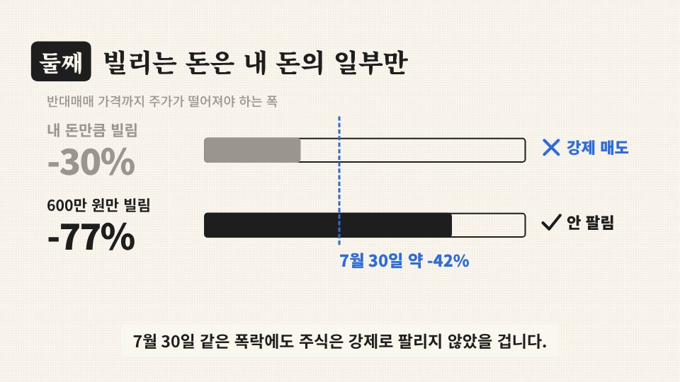
연출 66: S24 거리 막대 위에 '7월 30일 약 -42%' 세로 점선 → 위 줄 ✗ '강제 매도', 아래 줄 ✓ '안 팔림' / 67: 막대 퇴장, 천칭 저울 오른쪽 '오를 때 수익 ↓'(빨강) / 68: 왼쪽 '폭락 한 번에 계좌가 끝나지 않음'이 얹혀 왼쪽으로 기울어짐
연결 근거 문장 66 '7월 30일 같은 폭락에도 주식은 강제로 팔리지 않았을 겁니다' (7월 30일 = 약 -42%, 문장 29) / 67 '빌린 돈이 적으면 오를 때 수익도 그만큼 줄어듭니다' / 68 '폭락 한 번에 계좌가 끝나지 않는다는 게 훨씬 중요'
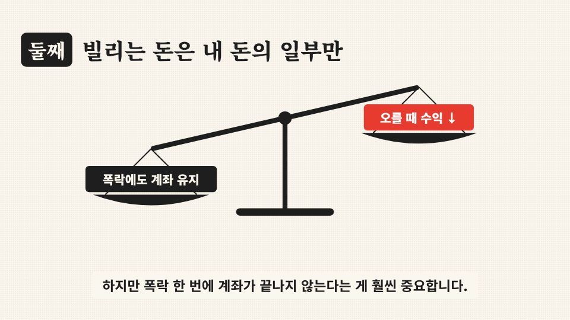
연출 66: S24 거리 막대 위에 '7월 30일 약 -42%' 세로 점선 → 위 줄 ✗ '강제 매도', 아래 줄 ✓ '안 팔림' / 67: 막대 퇴장, 천칭 저울 오른쪽 '오를 때 수익 ↓'(빨강) / 68: 왼쪽 '폭락 한 번에 계좌가 끝나지 않음'이 얹혀 왼쪽으로 기울어짐
연결 근거 문장 66 '7월 30일 같은 폭락에도 주식은 강제로 팔리지 않았을 겁니다' (7월 30일 = 약 -42%, 문장 29) / 67 '빌린 돈이 적으면 오를 때 수익도 그만큼 줄어듭니다' / 68 '폭락 한 번에 계좌가 끝나지 않는다는 게 훨씬 중요'
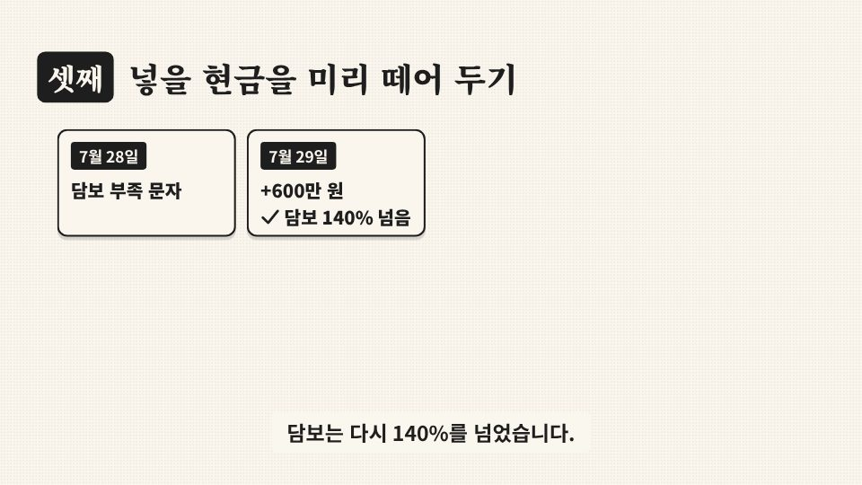
연출 69: 번호 타이틀 '셋째', 계좌 막대 옆에 따로 떼어 둔 점선 상자 '넣을 현금' / 70: 날짜 칸 '7월 28일 담보 부족 문자' → '7월 29일 +600만 원' / (뒷줄) ✓ '담보 140% 넘음' / 71: '7월 30일' ✓ '강제 매도 없음' / (뒷줄) '7월 31일 반등 +30% 가까이'(빨강) / 72: 아래 칩 '넣을 현금이 없다면 → 덜 빌리기'('덜 빌리기' 형광펜)
연결 근거 문장 69 '넣을 현금을 미리 떼어 두는 것' / 70 '문자를 받은 다음 날까지 600만 원을 넣었다면 / (뒷줄) 담보는 다시 140%를 넘었습니다' (7월 29일 = 7월 28일 다음 날) / 71 '강제로 팔리지 않고, / (뒷줄) 7월 31일의 반등도 함께' / 72 '넣을 현금이 없다면 그만큼 덜 빌리는 게'
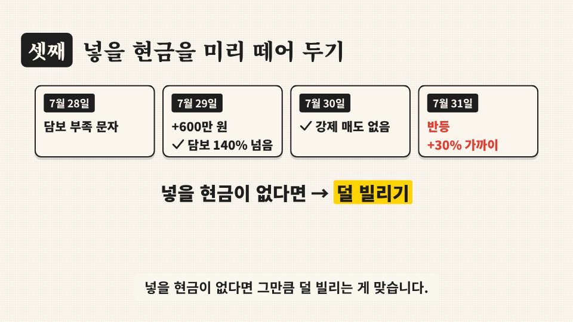
연출 69: 번호 타이틀 '셋째', 계좌 막대 옆에 따로 떼어 둔 점선 상자 '넣을 현금' / 70: 날짜 칸 '7월 28일 담보 부족 문자' → '7월 29일 +600만 원' / (뒷줄) ✓ '담보 140% 넘음' / 71: '7월 30일' ✓ '강제 매도 없음' / (뒷줄) '7월 31일 반등 +30% 가까이'(빨강) / 72: 아래 칩 '넣을 현금이 없다면 → 덜 빌리기'('덜 빌리기' 형광펜)
연결 근거 문장 69 '넣을 현금을 미리 떼어 두는 것' / 70 '문자를 받은 다음 날까지 600만 원을 넣었다면 / (뒷줄) 담보는 다시 140%를 넘었습니다' (7월 29일 = 7월 28일 다음 날) / 71 '강제로 팔리지 않고, / (뒷줄) 7월 31일의 반등도 함께' / 72 '넣을 현금이 없다면 그만큼 덜 빌리는 게'
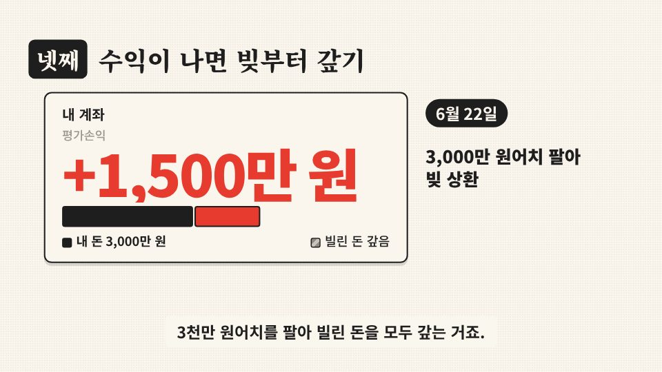
연출 73: 번호 타이틀 '넷째' / 74: S03의 계좌 카드(+1,500만 원) + '6월 22일' 칩 / 75: 빌린 돈 칸이 사라지고('빌린 돈 갚음') 칩 '3,000만 원어치 팔아 빚 상환' / 76: 머리글 '주식 4,500만 원어치' + 칩 '남은 주식 = 전부 내 돈'(형광펜) / 77: 칩 ✓ '7월 폭락에도 강제 매도 없음' / (뒷줄) 날짜 칩 '7월 31일', 평가손익 +1,500만 → -350만 원 정도(내 돈 칸 일부만 파랑 점선) / 78: 카드 퇴장, 화면 분할 — 왼쪽 '실제 사연 -2,500만 원'(남은 내 돈 500만 원 막대) vs 오른쪽 '빚부터 갚았다면 -350만 원 정도'(남은 내 돈 2,650만 원 막대) → '2천만 원 넘게 차이'(형광펜)
연결 근거 문장 73 '수익이 나면 빚부터 갚는 것' / 74 '수익 1,500만 원이 난 6월 22일에' / 75 '3천만 원어치를 팔아 빌린 돈을 모두 갚는' / 76 '남은 주식은 4,500만 원어치이고, 전부 사연자의 돈' / 77 '7월 폭락에도 강제로 팔리지 않았고, / (뒷줄) 7월 31일 손실은 350만 원 정도' (막대 = 3,000 - 350 = 2,650) / 78 '실제 사연의 -2,500만 원과 비교하면 2천만 원 넘게 차이' (S05의 -2,500만 원·남은 돈 500만 원과 같은 값)
연출 73: 번호 타이틀 '넷째' / 74: S03의 계좌 카드(+1,500만 원) + '6월 22일' 칩 / 75: 빌린 돈 칸이 사라지고('빌린 돈 갚음') 칩 '3,000만 원어치 팔아 빚 상환' / 76: 머리글 '주식 4,500만 원어치' + 칩 '남은 주식 = 전부 내 돈'(형광펜) / 77: 칩 ✓ '7월 폭락에도 강제 매도 없음' / (뒷줄) 날짜 칩 '7월 31일', 평가손익 +1,500만 → -350만 원 정도(내 돈 칸 일부만 파랑 점선) / 78: 카드 퇴장, 화면 분할 — 왼쪽 '실제 사연 -2,500만 원'(남은 내 돈 500만 원 막대) vs 오른쪽 '빚부터 갚았다면 -350만 원 정도'(남은 내 돈 2,650만 원 막대) → '2천만 원 넘게 차이'(형광펜)
연결 근거 문장 73 '수익이 나면 빚부터 갚는 것' / 74 '수익 1,500만 원이 난 6월 22일에' / 75 '3천만 원어치를 팔아 빌린 돈을 모두 갚는' / 76 '남은 주식은 4,500만 원어치이고, 전부 사연자의 돈' / 77 '7월 폭락에도 강제로 팔리지 않았고, / (뒷줄) 7월 31일 손실은 350만 원 정도' (막대 = 3,000 - 350 = 2,650) / 78 '실제 사연의 -2,500만 원과 비교하면 2천만 원 넘게 차이' (S05의 -2,500만 원·남은 돈 500만 원과 같은 값)
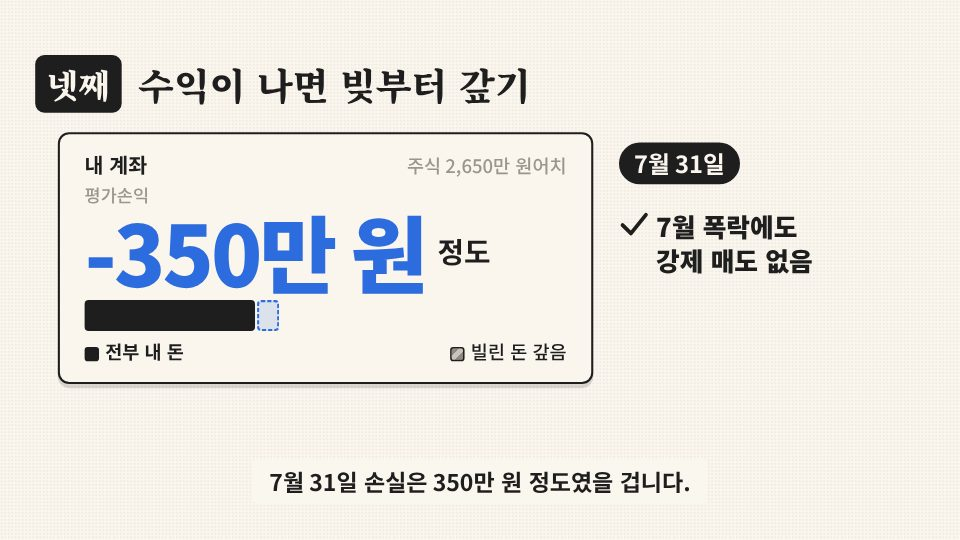
연출 73: 번호 타이틀 '넷째' / 74: S03의 계좌 카드(+1,500만 원) + '6월 22일' 칩 / 75: 빌린 돈 칸이 사라지고('빌린 돈 갚음') 칩 '3,000만 원어치 팔아 빚 상환' / 76: 머리글 '주식 4,500만 원어치' + 칩 '남은 주식 = 전부 내 돈'(형광펜) / 77: 칩 ✓ '7월 폭락에도 강제 매도 없음' / (뒷줄) 날짜 칩 '7월 31일', 평가손익 +1,500만 → -350만 원 정도(내 돈 칸 일부만 파랑 점선) / 78: 카드 퇴장, 화면 분할 — 왼쪽 '실제 사연 -2,500만 원'(남은 내 돈 500만 원 막대) vs 오른쪽 '빚부터 갚았다면 -350만 원 정도'(남은 내 돈 2,650만 원 막대) → '2천만 원 넘게 차이'(형광펜)
연결 근거 문장 73 '수익이 나면 빚부터 갚는 것' / 74 '수익 1,500만 원이 난 6월 22일에' / 75 '3천만 원어치를 팔아 빌린 돈을 모두 갚는' / 76 '남은 주식은 4,500만 원어치이고, 전부 사연자의 돈' / 77 '7월 폭락에도 강제로 팔리지 않았고, / (뒷줄) 7월 31일 손실은 350만 원 정도' (막대 = 3,000 - 350 = 2,650) / 78 '실제 사연의 -2,500만 원과 비교하면 2천만 원 넘게 차이' (S05의 -2,500만 원·남은 돈 500만 원과 같은 값)
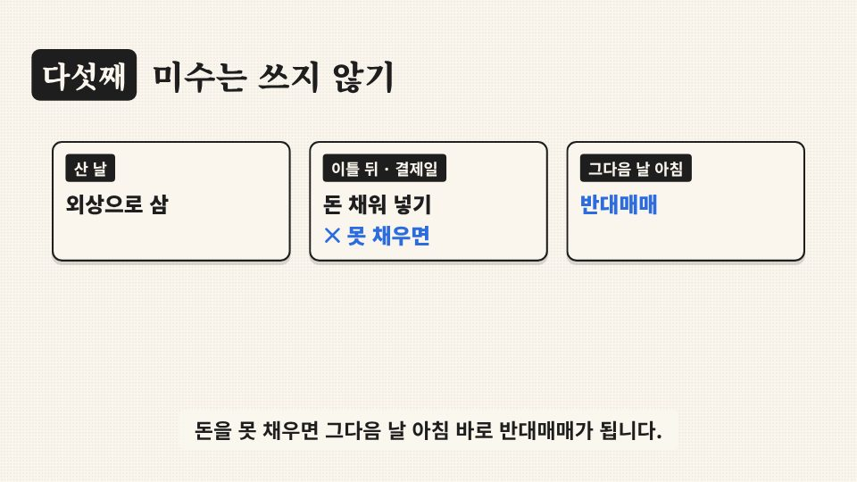
연출 79: 번호 타이틀 '다섯째' / 80: 날짜 칸 '산 날' → '이틀 뒤 · 결제일: 돈 채워 넣기' / (뒷줄) 산 날 칸에 '외상으로 삼' / 81: 결제일 칸 ✗ '못 채우면' → '그다음 날 아침: 반대매매'(파랑)
연결 근거 문장 79 '미수는 쓰지 않는 것' / 80 '이틀 뒤 결제일까지 돈을 채워 넣기로 하고 / (뒷줄) 외상으로 주식을 사는 것' / 81 '돈을 못 채우면 그다음 날 아침 바로 반대매매'
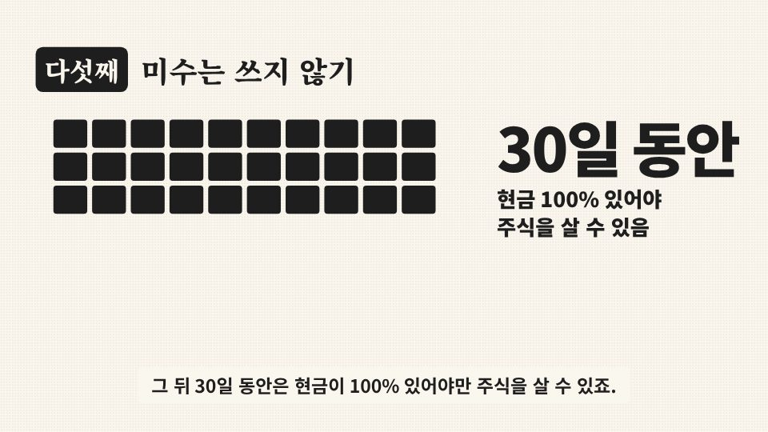
연출 82: 30칸 달력이 차례로 칠해지고 '30일 동안 · 현금 100% 있어야 주식을 살 수 있음' / 83: 달력 퇴장, '6월 한 달 · 증권사 10곳 / 미수 반대매매로 팔린 주식' / (뒷줄) 8,459억 원어치 카운트 / 84: '며칠짜리 외상' ≠ '오래 들고 갈 주식'
연결 근거 문장 82 '그 뒤 30일 동안은 현금이 100% 있어야만' / 83 '6월 한 달 증권사 10곳에서 미수 반대매매로 / (뒷줄) 팔린 주식은 8,459억 원어치' / 84 '며칠짜리 외상은 오래 들고 갈 주식을 사는 데 처음부터 맞지 않습니다'
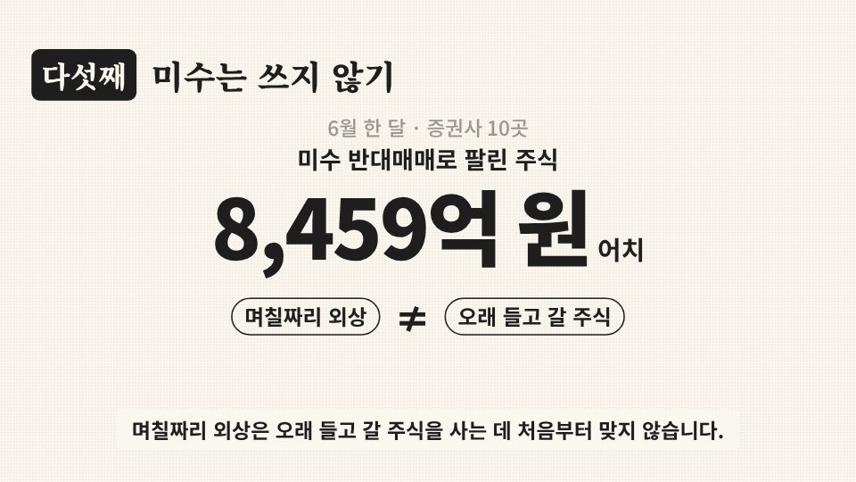
연출 82: 30칸 달력이 차례로 칠해지고 '30일 동안 · 현금 100% 있어야 주식을 살 수 있음' / 83: 달력 퇴장, '6월 한 달 · 증권사 10곳 / 미수 반대매매로 팔린 주식' / (뒷줄) 8,459억 원어치 카운트 / 84: '며칠짜리 외상' ≠ '오래 들고 갈 주식'
연결 근거 문장 82 '그 뒤 30일 동안은 현금이 100% 있어야만' / 83 '6월 한 달 증권사 10곳에서 미수 반대매매로 / (뒷줄) 팔린 주식은 8,459억 원어치' / 84 '며칠짜리 외상은 오래 들고 갈 주식을 사는 데 처음부터 맞지 않습니다'
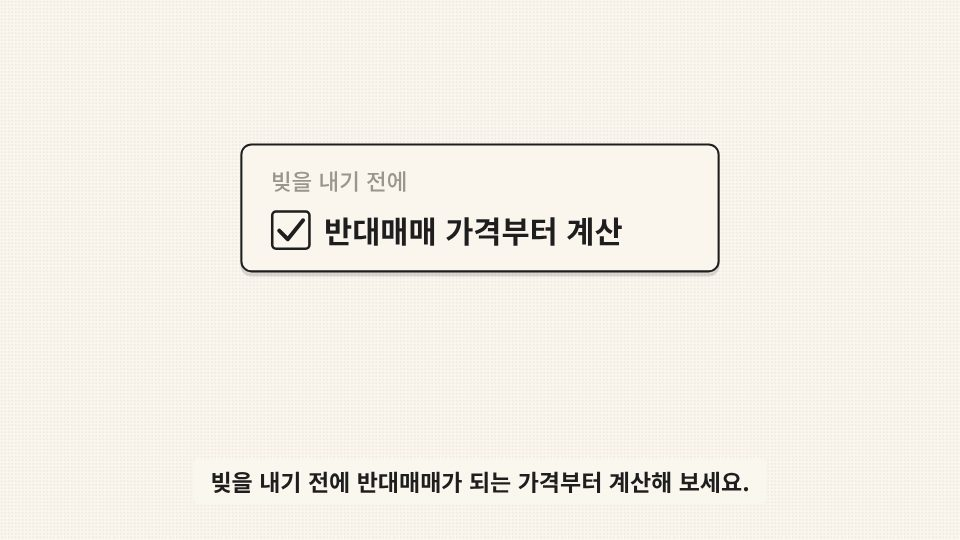
연출 85: 두 열 요약 — 왼쪽 '빚투가 위험한 이유' 01~04, 오른쪽 '빚을 쓸 때 지킬 기준' 첫째~다섯째 / 86: 요약 퇴장, 카드 '빚을 내기 전에' ✓ '반대매매 가격부터 계산' / 87: '성공 투자' / 88: 끝까지 유지 후 페이드아웃
연결 근거 문장 85 '빚투가 위험한 이유와 빚을 쓸 때 지킬 기준' / 86 '빚을 내기 전에 반대매매가 되는 가격부터 계산해 보세요' / 87 '성공 투자 하셨으면 좋겠습니다'
연출 85: 두 열 요약 — 왼쪽 '빚투가 위험한 이유' 01~04, 오른쪽 '빚을 쓸 때 지킬 기준' 첫째~다섯째 / 86: 요약 퇴장, 카드 '빚을 내기 전에' ✓ '반대매매 가격부터 계산' / 87: '성공 투자' / 88: 끝까지 유지 후 페이드아웃
연결 근거 문장 85 '빚투가 위험한 이유와 빚을 쓸 때 지킬 기준' / 86 '빚을 내기 전에 반대매매가 되는 가격부터 계산해 보세요' / 87 '성공 투자 하셨으면 좋겠습니다'
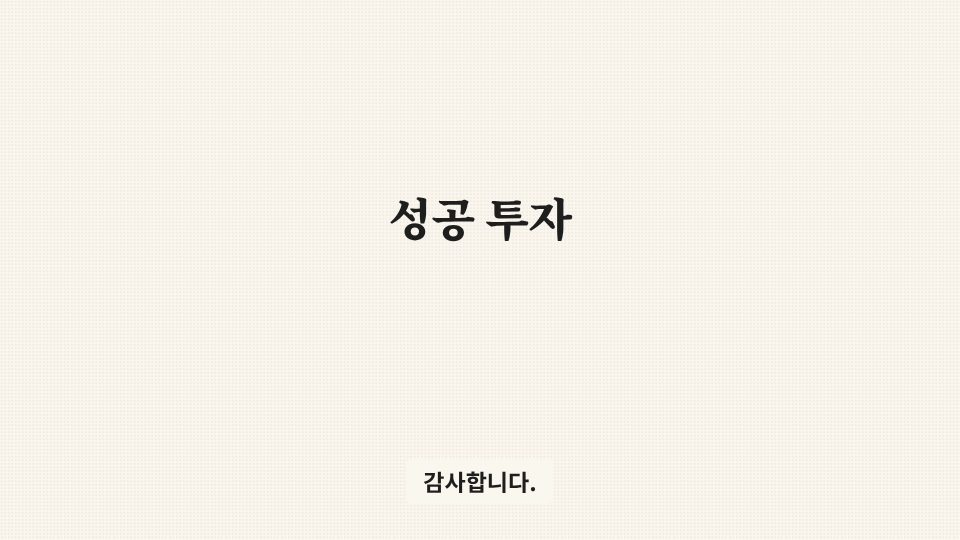
연출 85: 두 열 요약 — 왼쪽 '빚투가 위험한 이유' 01~04, 오른쪽 '빚을 쓸 때 지킬 기준' 첫째~다섯째 / 86: 요약 퇴장, 카드 '빚을 내기 전에' ✓ '반대매매 가격부터 계산' / 87: '성공 투자' / 88: 끝까지 유지 후 페이드아웃
연결 근거 문장 85 '빚투가 위험한 이유와 빚을 쓸 때 지킬 기준' / 86 '빚을 내기 전에 반대매매가 되는 가격부터 계산해 보세요' / 87 '성공 투자 하셨으면 좋겠습니다'